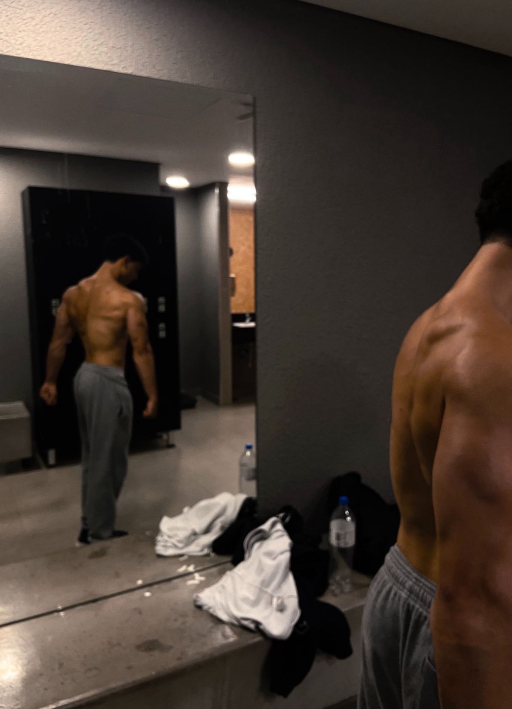

Sobre Mim
Meu nome é Luiz, tenho 20 anos, moro em Vila Velha e estou cursando Sistemas de Informações na UVV.
Habilidades Pessoais
Treino powerlifting, jogo valorant e roblox.
Hobbies
Jogar e treinar.
Vida Acadêmica
Primeiro Período na Universidade